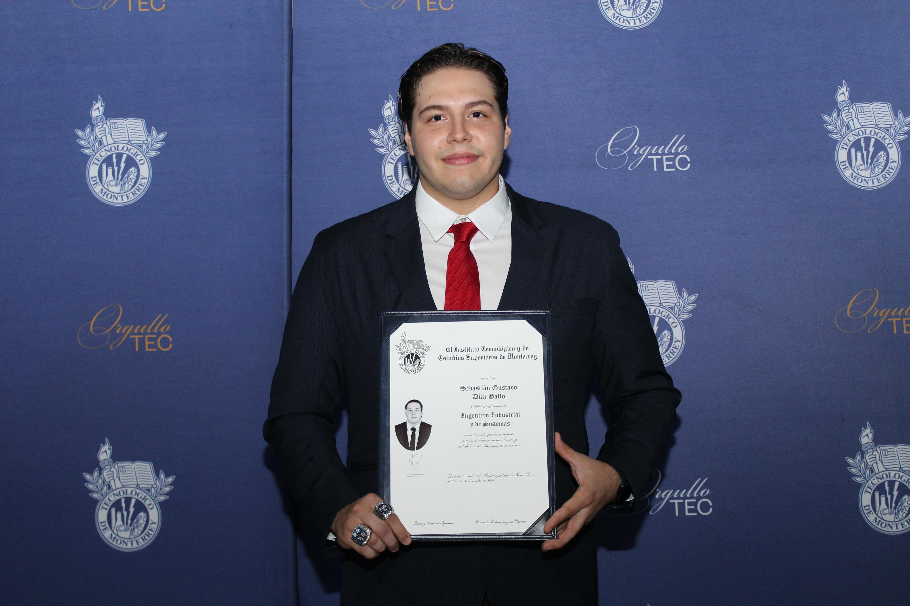
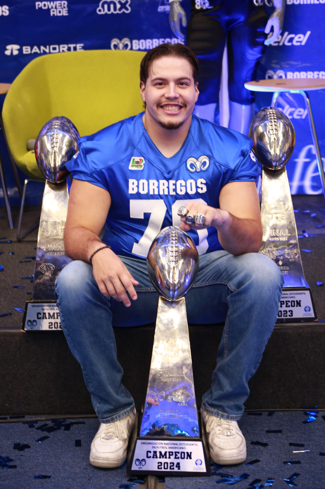
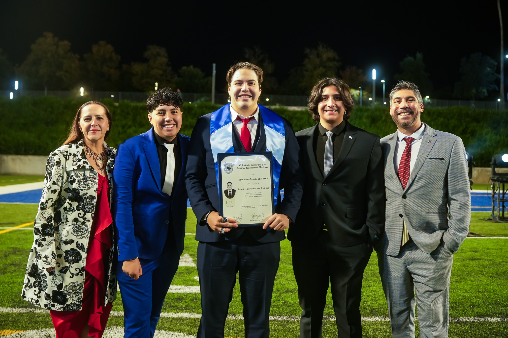
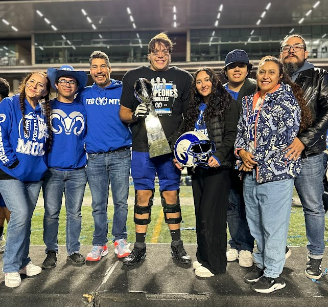

Bachelor of Industrial Engineering
Master of Business Management
Moving away from home to pursue my education and athletic career profoundly shaped my professional DNA. Balancing a rigorous engineering degree with the intense demands of being a varsity American football player and earning three consecutive national championships with Borregos ITESM required far more than physical discipline. It demanded elite time management, deep resilience, and an unwavering sense of responsibility to my team and my scholarship commitments. Navigating the challenges of being an out-of-state student taught me adaptability and how to consistently thrive outside my comfort zone.
Beyond industrial strategy and operations, I bring a strong technical curiosity to the table. I actively explore the intersection of business and emerging technologies by designing and self-hosting automation workflows and AI agents. This hands-on experience allows me to approach complex operational problems with an innovative, tech-forward mindset, bridging the gap between traditional industry and digital transformation.



Highlights: Varsity Football, Borregos ITESM, Academic Leadership.
Leading research and strategic ideation for a major expansion project into the US market, utilizing Design Thinking to identify unique entry points and consumer pain points. Developing complex financial models to project ROI and operational costs for new US-based logistics hubs. Synthesizing market intelligence into innovative business models to ensure competitive differentiation and alignment with corporate strategy.
Gained critical "shop-floor" perspective by managing quality inspection and inventory workflows. Ensured 100% compliance with customer specifications in a high-pressure manufacturing environment.
Optimized cooling bay logistics by implementing a visual movement tracking system, significantly increasing truck loading throughput and efficiency.
Redesigned the organization of the painting area using ergonomic and Lean principles, resulting in a 20% increase in production line flow efficiency.
Engineered interactive data dashboards for the reliability department, reducing reporting lead times and enabling data-driven maintenance scheduling.
Structuring market entry strategies and developing complex financial models for cost and ROI projections.
Applying Human-Centered Innovation and Creative Problem Solving (Design Thinking) to identify consumer pain points and generate viable competitive advantages.
Optimizing industrial processes, reducing waste, and ensuring compliance through Lean Manufacturing and Agile methodologies.
Fostering a high-trust collaborative culture to execute complex strategic plans under extreme competitive pressure, integrating cross-functional teamwork.
Whether for a strategic partnership, project discussion, or professional networking.
sebastiangdiazg@hotmail.com